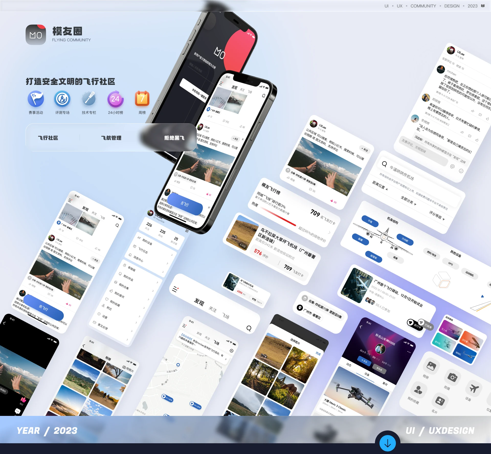
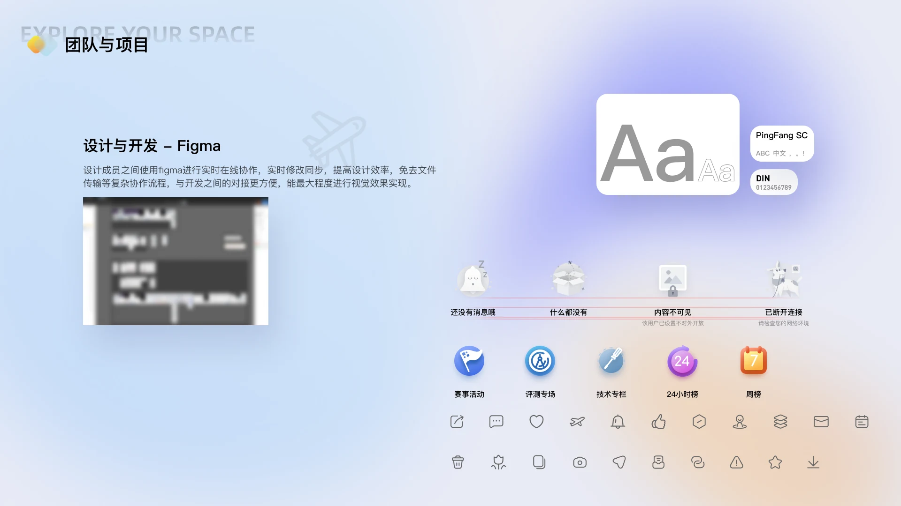
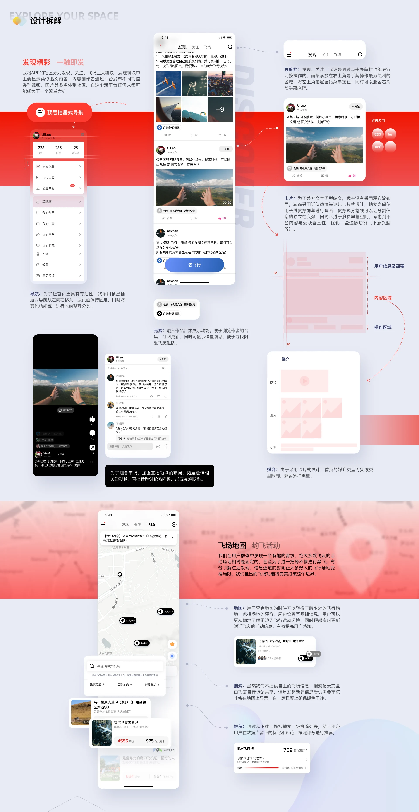
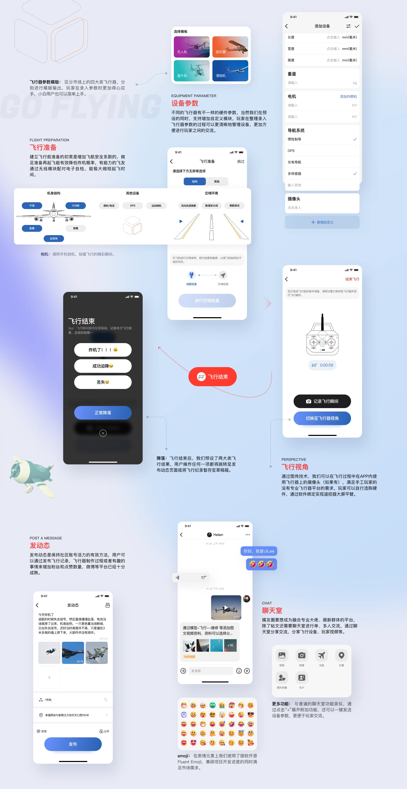
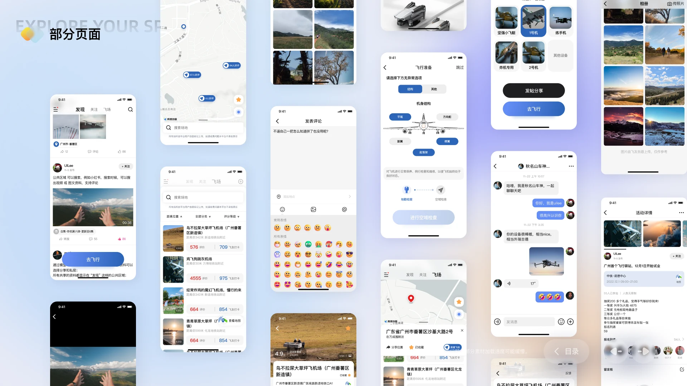

07 / Lab Project / 2022.08 - 2023.01
Modeller’s Circle
A safe, civil flying community — one step closer to the sky
Overview
Modeller’s Circle gives RC pilots somewhere to log their aircraft, manage flights and share the joy with other modellers. Find modellers near you, discover better flying sites, and organise or join flights around them.
Building awareness
For a long time the DIY barrier kept newcomers out. Tutorials and guides online are scattered and incomplete, and if you’re not especially handy, reaching the actual joy of flight control is hard.
Community support
Model aircraft is an easy hobby to misunderstand: expensive, effortful, time-consuming. We wanted somewhere to share and socialise, so more people understand — and support — this very personal pursuit.
Background analysis
- User research
- Business strategy
- Product direction
- Hardware & software interaction
Visual Direction
I split the app’s community into three modules: Discover, Following and Flying Sites. Discover carries post-style content — creators publish video, photos and other media of different flight-control styles, and on a new platform anyone can become the next big account. On the hardware side I separated the market’s four aircraft categories into their own templates, so entering parameters feels natural and a beginner can get started without friction.
Screens





Other work
- LKSY · All Platforms2024 - 2026
- KEKE · IP Design2025.03
- Changting Assistant App2020.01 - 2023.05
- XiaoWo Accessibility Call Assistant2020.01 - 2023.05
- Umeta 2.12023.07 - 2024.02
- Appleland Web2023.07 - 2024.02
- ZhiPing Smart Screen2021.07 - 2023.01
- Corporate Website Design2020 - 2023
Have something to build?
Available for remote UI/UX design outsourcing and freelance work: B2B dashboards, WeChat mini programs, mobile interfaces, accessibility design, prototypes and design specs.
Email 965333099@qq.com · WeChat and phone 18666099550